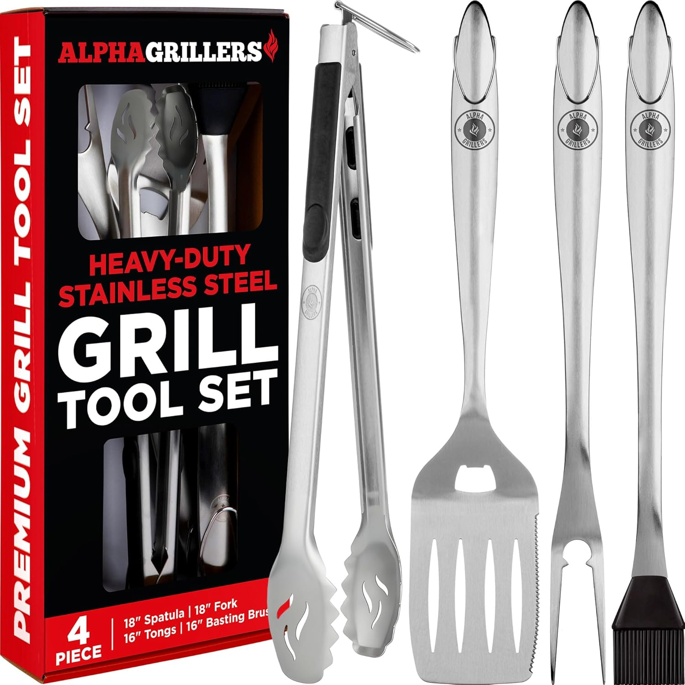
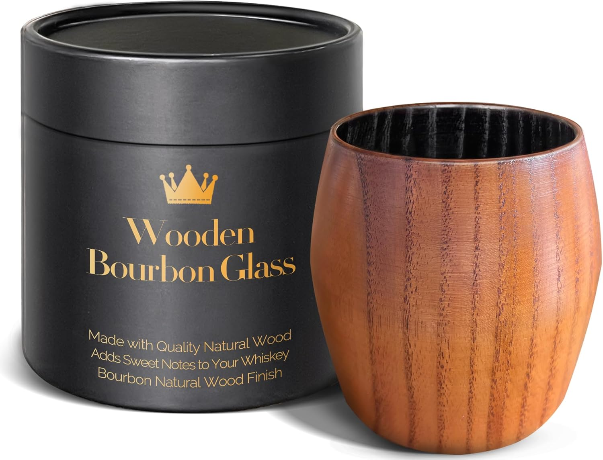
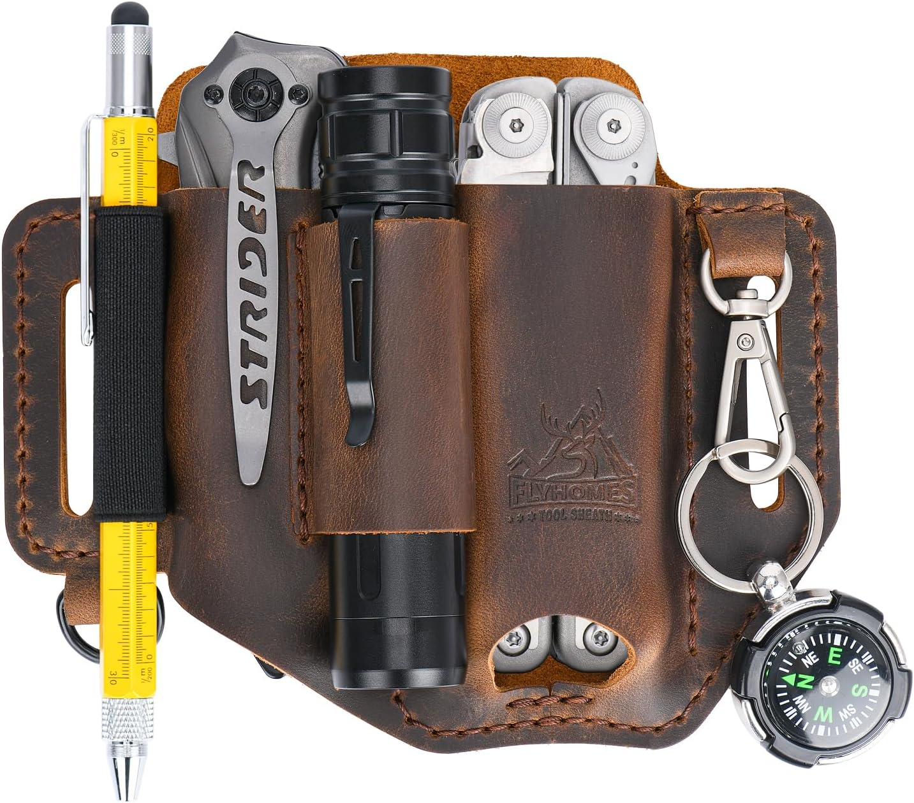
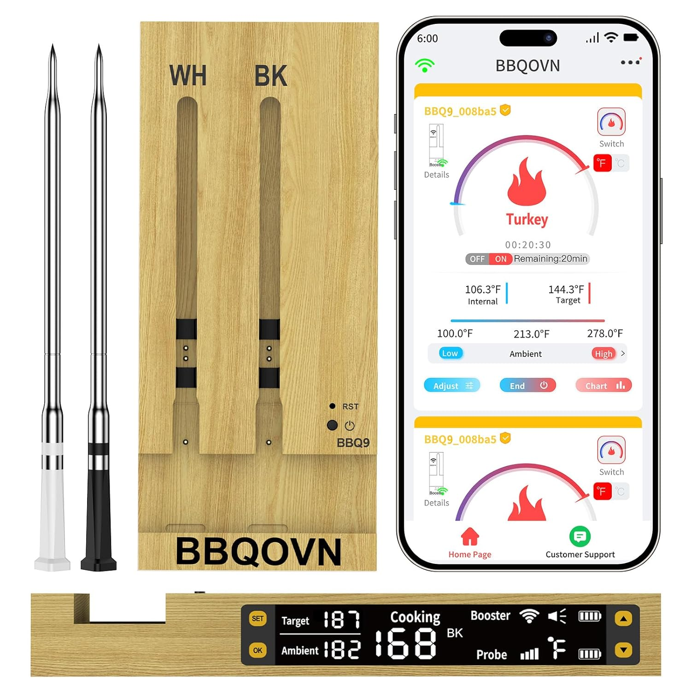
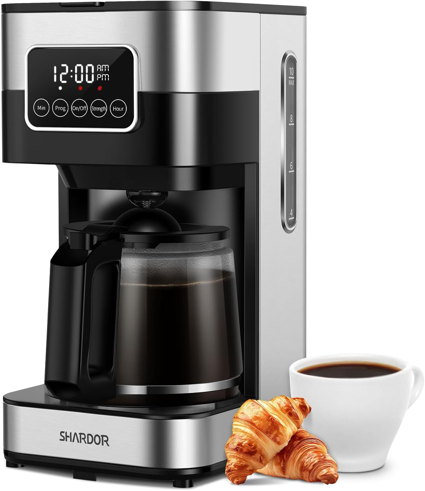
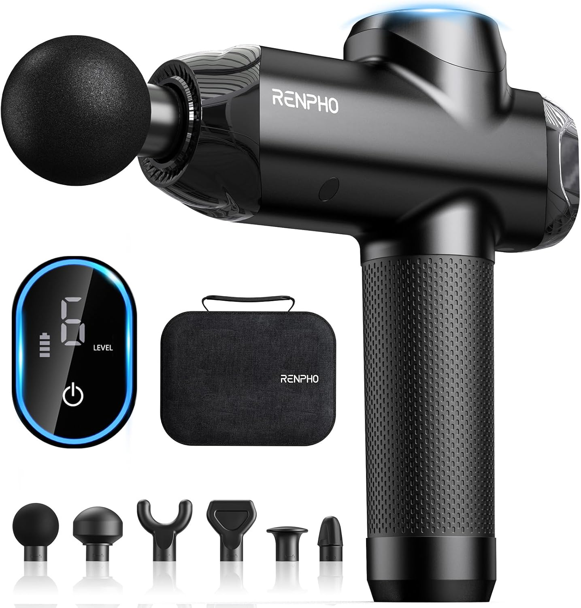
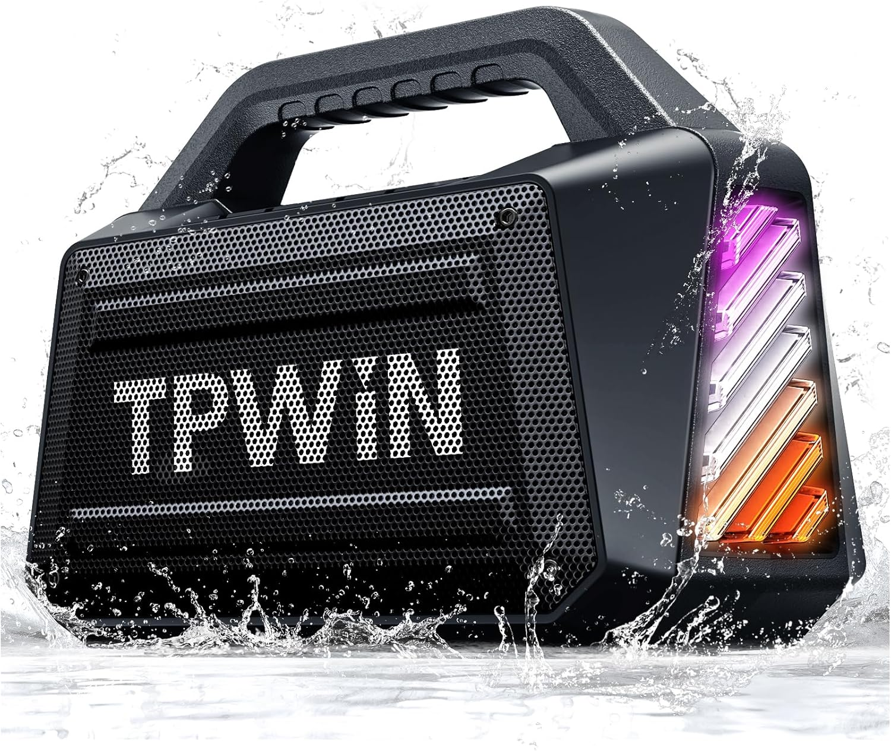
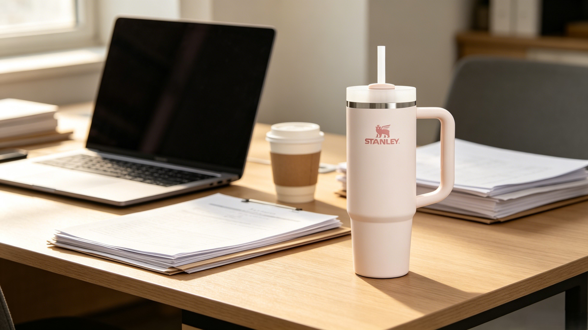

What Americans give vs. what they actually want — and where they overlap
Givers vs. Receivers — where they agree and where they don't
Mother's Day spending consistently outpaces Father's Day by 25–35%. Stop buying ties and 'World's Best Dad' mugs — no one uses them. Dads want hobby-related gear and experiences. If he grills, get him a premium grilling tool, not another tie.
Products that hit the sweet spot between what you want to give and what he'll love








Stop buying ties. Clothing is the #3 most-given Father's Day category at 43%, but ties are the most-regifted item in history. Dads rank hobby gear 5x higher than neckties on their wish list.
Hobby gear is the sweet spot. If he grills, fishes, or woodworks — upgrade his kit. The dad who 'has everything' doesn't have the premium version of his favorite tool yet.
Electronics are under-given. Only 24% of givers buy electronics, but it's a top-2 most-wanted category. A wireless thermometer, smart home gadget, or new tech accessory bridges the gap.
An outing with him beats an item for him. 49% of givers plan a special outing — and dads love it. Make it a shared experience: ballgame, fishing trip, or cookout together.
Never scramble for a last-minute gift again. We'll remind you 2 weeks early with curated picks.